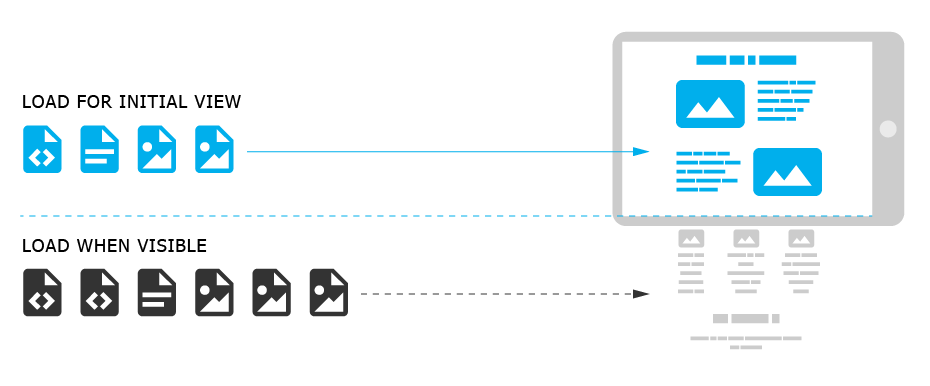
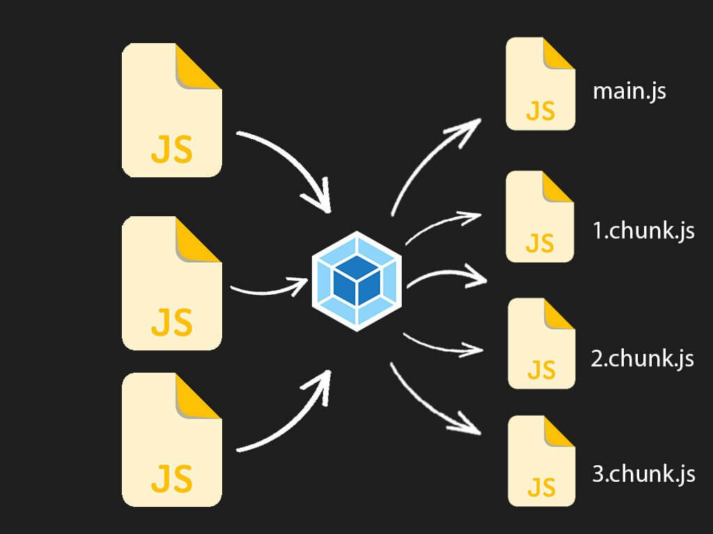
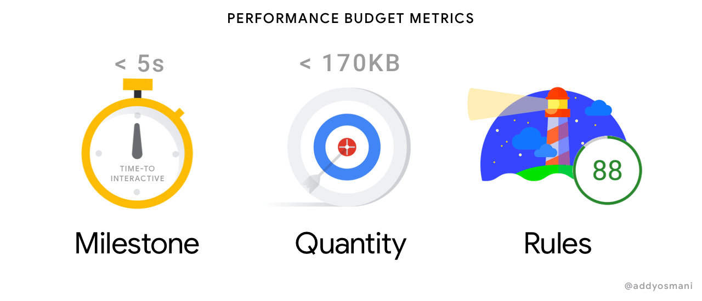

Web Performance Optimization

My name is Yauheni Koniukh
This 10-minute guide will cover following:
- What is Web performance optimization?
- Optimization methods and tool
- Why is website optimization important?
What is Web performance optimization?
Web performance is the objective measurements and the perceived user experience of load time and runtime.
- Animation performance and frame rate
- Critical rendering path
- CSS and JavaScript animation performance
- Lazy loading
- Navigation and resource timings
- Optimizing startup performance
- Performance budgets
- Performance fundamentals
- Performance Monitoring: RUM vs synthetic monitoring
- Populating the page: how browsers work
- Recommended Web Performance Timings: How long is too long?
- Understanding latency
Lazy loading
Lazy loading is a strategy to identify resources as non-blocking (non-critical) and load these only when needed.
Lazy loading can be applied to multiple resources and through multiple strategies:
- Code splitting
- Script type module
- Loading attribute
Code splitting
JavaScript, CSS and HTML can be split into smaller chunks. This enables sending the minimal code required to provide value upfront, improving page-load times. The rest can be loaded on demand.
- Entry point splitting: separates code by entry point(s) in the app
- Dynamic splitting: separates code where dynamic import() statements are used
Script type module

Any script tag with type="module" is treated like a JavaScript module and is deferred by default.
Loading attribute

The loading attribute on an img element (or the loading attribute on an iframe ) can be used to instruct the browser to defer loading of images/iframes that are off-screen until the user scrolls near them.
Critical rendering path

How does the browser rendering engine work?
In order to render content the browser has to go through a series of steps:
- The Document Object Model (DOM) is created as the HTML is parsed.
- The HTML may request JavaScript, which may, in turn, alter the DOM.
- The HTML includes or makes requests for styles, which in turn builds the CSS Object Model (CSSOM).
- The browser engine combines the two to create the Render Tree.
- Layout determines the size and location of everything on the page.
- Once layout is determined, pixels are painted to the screen.
CSS and JavaScript animation performance

Navigation and resource timings

Optimizing startup performance
There are other things beyond going asynchronous, which can help you improve your app's startup time. Here are a few of them:
- Download time
- GPU factors
- Data size
Performance budgets
A budget exists to reflect your reachable goals.
These goals can be:
- Timing based (e.g. Time to Interactive, First Contentful Paint).
- Quantity-based (e.g. amount of JS files/total image size).
- Rule-based (e.g. PageSpeed index, Lighthouse score).
A performance budget helps you protect optimal behavior for your current users while enabling you to tap into new markets and deliver custom experiences.
Performance fundamentals
Exists essential performance metrics:
- Responsiveness means how fast the system provides outputs (possibly multiple ones) in response to user inputs.
- Framerate is the rate at which the system changes pixels displayed to the user.
- Memory usage
- Power usage
Performance Monitoring: RUM vs synthetic monitoring

Synthetic monitoring and real user monitoring (RUM) are two approaches for monitoring and providing insight into web performance.
Recommended Web Performance Timings: How long is too long?
Synthetic monitoring and real user There are no clear set rules as to what constitutes a slow pace when loading pages, but there are specific guidelines for indicating content will load (1 second), idling (50ms), animating (16.7s) and responding to user input (50 to 200ms).